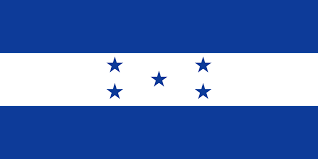
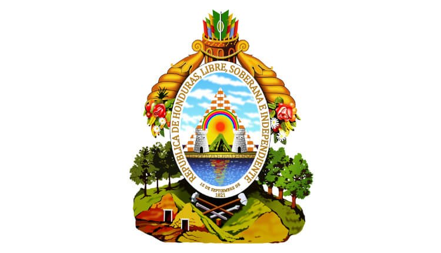

SIMBOLOS PATRIOS
Bandera Nacional
Este el símbolo más representativo de Honduras, quedo establecido por decreto del Congreso Nacional el 6 de febrero de 1866, Ya en el siglo xx, en 1949, fueron precisados el tono azul y las proporciones de las tres franjas, el ancho de la bandera es dos veces mayor que su altura, honduras tardo 45 años en establecer una bandera, ya que después de la separación de honduras de los Estados Federados del Centro de América usaba la misma bandera que representaba a todos los países centro americanos.
Escudo Nacional
Este símbolo proviene del escudo de armas que fue establecido en 1825, y que consistía en un triángulo en cuya base aparecía un volcán entre dos castillos, en el año 1866 se le agrego un sol naciente, en 1935 bajo la presidencia de Tiburcio Carias Andino, le fue dado su aspecto definitivo, agregándole las flechas y otras partes, El soberano Congreso Nacional en el decreto No. 216 y en el artículo 142 considera al Escudo como Símbolo Nacional para todos los usos, de modo claro y general.
Himno Nacional
Surgió a raíz de un concurso convocado en 1904 por el presidente de la república, general Manuel Bonilla, Escrito por el poeta Augusto C. Coello y orquestado por el compositor de origen alemán Carlos Hartling, fue declarado Himno nacional el 15 de noviembre de 1915, musicalmente el himno nacional consta de un coro y siete estrofas, cada estrofa la conforman ocho versos decasílabos y son en total 64 versos.
La Flor Nacional
Primero fue la rosa la flor nacional de honduras, entre los años 1946 y 1969, pero en noviembre de ese último año el gobierno militar precedido por el General Oswaldo López Arellano decreto una nueva flor nacional la orquídea Brasasavola Dgbyana, esta orquídea abunda en los bosques hondureños, principalmente en las zonas húmedas que se encuentra a temperaturas muy frías.

El Ave Nacional
La guara roja o guacamaya perteneciente a la gran familia de los loros, se le reconoce como el ave nacional de la república de honduras, es un ave muy apreciada por las antiguas civilizaciones, podemos encontrar esculturas talladas en los monumentos mayas, llega a medias hasta los 90 centímetros de largo.